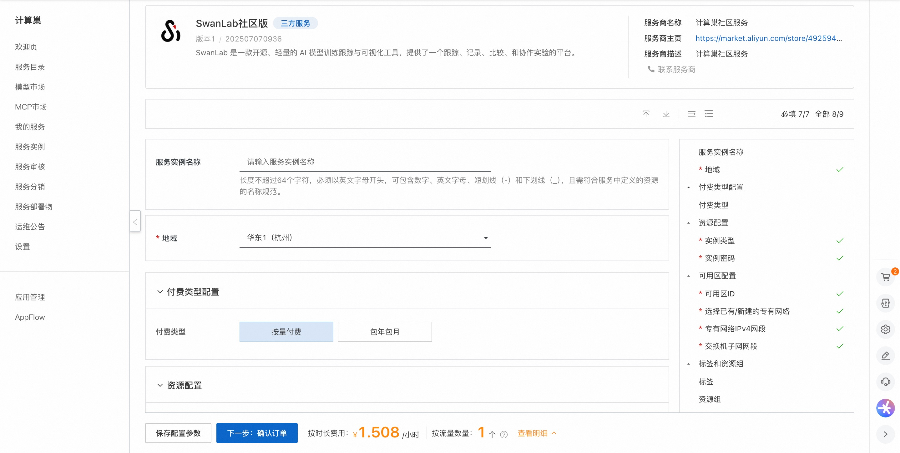

🌟 服务简介
SwanLab 是一款开源、轻量的 AI 模型训练跟踪与可视化工具，提供了一个跟踪、记录、比较、和协作实验的平台。
SwanLab 面向人工智能研究者，设计了友好的Python API 和漂亮的UI界面，并提供训练可视化、自动日志记录、超参数记录、实验对比、多人协同等功能。在SwanLab上，研究者能基于直观的可视化图表发现训练问题，对比多个实验找到研究灵感，并通过在线网页的分享与基于组织的多人协同训练，打破团队沟通的壁垒，提高组织训练效率。
💰 计费说明
SwanLab社区版在计算巢部署的费用主要涉及：
- 所选vCPU与内存规格
- 系统盘类型及容量
- 公网带宽
🚀 部署流程
-
访问计算巢SwanLab社区版部署链接 ，按提示填写部署参数： 
-
参数填写完成后可以看到对应询价明细，确认参数后点击下一步：确认订单。
-
确认订单完成后同意服务协议并点击立即创建进入部署阶段。
-
等待部署完成后就可以开始使用服务，进入服务实例详情点击服务地址。

-
访问服务地址注册账号并使用SwanLab社区版。

📚 使用指南
更多用法请参考SwanLab官网文档。
© 2009-2022 Aliyun.com 版权所有